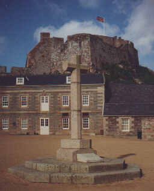
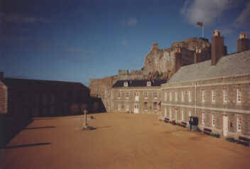

Saint Helier - Saint Hélyi - Saint Hélier

Abbey of St. Helier
An abbey was founded on the Islet, but this was finally destroyed on the 9th of November 1650 by a mortar bomb. The explosion which blew the old building to pieces was so devastating because the old Abbey church was being used as a gunpowder store by the Royalist Governor of Jersey during the English Civil War. English Parliamentary forces were beseiging the Castle which had been built around the monastery at the end of the 16th Century. Elizabeth Castle is now a popular heritage site.
A cross, erected on St. Helier's Day in 1959 and removed in 1999, marked the site of the high altar of the ancient abbey church, with the following inscription:
This cross, although removed from its original location at the very time when it was a focus of celebrations to mark 2000 years of Christianity, served as the pattern for the 12 Millennium crosses erected in the Parishes in 2000. St. Helier's Millennium Cross is situated at West Park to remind people of the link between Helier's life on the Islet and the bringing of Christianity to the people to the small settlement that was to become the town of St. Helier.
The Abbey of St. Helier
A simple granite cross marking the site of the Abbey of St. Helier, the man who brought Christianity to Jersey in the year 540, was unveiled, dedicated and consecrated at Elizabeth Castle yesterday afternoon.
This ten-feet high cross, which stands in the centre of the courtyard in the shadow of the Governor's House, was unveiled by His Excellency the Lieutenant-Governor of Jersey, General Sir George Erskine. When the Island flag had fallen away, the Dean of Jersey, the Very Reverend Canon A.S. Giles, stepped forward to dedicate this monument to a martyr. He said: "This abbey cross is in memory of those who worshipped on this spot."
The ceremony in which the Bailiff of Jersey, Sir Alexander Coutanche, played a leading part, was watched by members of the States, the Royal Court, local clergy and their wives and guests. It marked the anniversary of the death of Helier in 555 when Viking sea rovers plundered the rocky islet and put him to death.
Visitors, in gay summer clothes, gazed down from the lofty battlements of this historic fortress on to the scene in the sun-drenched courtyard where, over 1,400 years ago a monk called upon the inhabitants of Jersey to forsake their heathen ways and to turn to Christ.
Halberdiers of the Victoria College Combined Cadet Force under Sergeant D. Drage, mounted guard at the cross with the white belt and gaitered guard of honour provided by the Jersey Sea Cadet Corps under Lieutenant D. Seymour, R.N.R. Senior students from the Island schools were also present.
Addressing the gathering of nearly 150 people, the Bailiff of Jersey thanked the States Public Works Committee for having givn effect to his sincere wish that the site of the old abbey of St. Helier should be marked with a cross.
St. Helier, according to the early historians, brought the Christian religion to Jersey in 540. But although he met his death at the hands of sea rovers 15 years later, it did not put an end to his work. The rocky islet continued to be the seat of Christianity in Jersey until the year 860 when sea rovers again landed and destroyed the religious settlement.
Those sea rovers, continued Sir Alexander, were the same Vikings who, as Danes, had brought terror to the coasts of England. In 911, headed by Rollo, they had forced Charles of France to cede the Duchy of Normandy, which is the origin of Jersey's traditions.
William the Conqueror, a most Christian King, was the fifth in direct descent from the leader of those heathen Vikings. In the year 1155 William Fitz-Hamon founded an abbey on the islet in memory of St. Helier. And so it was that Christianity was brought back to the place by descendants of the men who destroyed it.
"The Abbey might still have been here but for many things in which a woman played a part," said the Bailiff. She was Matilda, mother of Henry II, whose favourite abbey at Cherbourg was poor compared with the Abbey of Saint Helier. So it came to be that the abbey was reduced to a priory in 1179. "It had a short life as an abbey but it continued as a priory right up to the Reformation," said Sir Alexander. "And therefore it is only right that this spot should be marked by a Christian cross."
The Bailiff then invited His Excellency to unveil the cross. as Sir George pulled the securing cord and the flag fell away to reveal the cross, five trumpeters of the Jersey Musical Union under their Bandmaster, Mr. Don Barnett, sounded a specially-composed fanfare. The Dean conducted the short service of consecration and then the Bailiff stepped forward to lay a wreath at the foot of the cross on behalf of the States and people of Jersey. Again the trumpeters' fanfare echoed around the lofty granite battlements and out across the bay.
The ceremony was over.
Jersey Evening Post, July 17th 1959
The making of the cross was under the control of the Public Works Committee of the States of the Island and from a model made by Mr. E.S. Le Feuvre, supplied by the Museum of the Société Jersiaise. Working drawings, keeping the proportions similar to the scale model, were prepared by Mr. C. Warren, Assistant Road Surveyor. to these were added a double-stepped octagonal platform and a stone tablet.
The stone used was collected from salvage stored at the Public Works Stone Depot Yard at La Saline, St.John, and each stone was selected to match in colour and texture. This type of granite no doubt originally came from Mont Mado Quarries. One of the Department's employees, Mr. Louis Chataigniere, at the La Saline Stone Depot, carried out the cutting and dress of the stone work.
Annual Bulletin 1960

The Cross which used to mark the site of the high altar of the Abbey of St. Helier
Société members visit 'the eternal castle'
Talk by Lord Coutanche
"Elizabeth Castle is one of those places that will never die," Lord Coutanche, a patron of the Société Jersiaise, told some 150 members of the society who went on an excursion to the castle yesterday afternoon.
Talking to the members in the square of the castle, Lord Coutanche first recalled the early days of the castle islet and said that in the 16th century the endowment of the abbey had been disbanded and it had been reduced to a priory.
During Henry VIII's reign, Gorey Castle had been disbanded as the principal fortress of the Island, and Elizabeth Castle, named by Sir Walter Raleigh, had been started. It had not been completed, however, for another 100 years.
In 1646, King Charles I had come to Jersey and had been under the care of Capt. George Carteret, the then Lieut.-Governor and Bailiff. It was during his stay in the Island that the King had granted the charter for the establishment of New Jersey in America.
Lord Coutanche said that one of his earliest recollections was being rowed across to the castle for the garrison service in the Governor's house.
The castle had later been replaced by South Hill as the principal fortress of the Island, but the castle's potential had still been recognized by the occupying German forces in the last war and they had thought it worth while to fortify it.
Lord Coutanche concluded by saying that the exact replica of the priory cross in the square was an everlasting memorial of the religious significance of the islet.
Jersey Evening Post 4/6/1969

The cross marked the position of the high altar of the Abbey church near the centre of the Castle parade ground 1959-1999
Parish oppose cross move
Despite opposition from the Parish of St Helier, the Planning and Environment Committee have given the Jersey Museums Service planning approval to move the cross in the parade ground at Elizabeth Castle.
The Constable, Bob Le Brocq, objected to resiting the cross near the steps leading to the breakwater because he believes it marks the site of the altar of the Abbey of St Helier, and also as it is more accessible in its present position to the public who join the annual pilgrimage to the castle to mark St Helier Day.
It was unveiled on 16 July 1959 by the then Lieut-Governor, General Sir George Erskine, and consecrated by the Dean of Jersey of that time, the Very Rev Canon Alan Giles.
Museums director Michael Day says the significance of the site is 'complete speculation'.
'We have carried out a great deal of research into the original site of the abbey, and it is clear then no one knows exactly where it was. The purpose of the cross is purely symbolic,' he explained.
Mr Day says the Jersey Museums Service finds the present position, in the centre of the 18th-century parade ground, rather incongruous.
'This was designed to be an uninterrupted open space in which soldiers could march, and we want to restore the integrity of that space,' he said. Conservation architect Stuart Fell confirmed there was no reliable evidence to suggest where the abbey stood.
However, the parish authorities, who as yet have not been notified about Planning's decision, still beg to differ, citing the research undertaken when the cross was erected as well as historical records.
Controller of technical and environmental services Peter Noble said that resiting the cross was 'negating the Island's history', as whether it was put in the right place or not it was erected to be a memorial, 'It is going against what they are trying to protect,' he said.
Planning Committee members have suggested erecting a memorial stone on the existing site to commemorate its unveiling and dedication in 1959, which was instigated by the Bailiff of that time, the then Sir Alexander Coutanche, later Lord Coutanche.
Jersey Evening Post 25/6/1999
R'tou à la page d'siez-mé | Back to home page
E-mail: geraint@societe-jersiaise.org